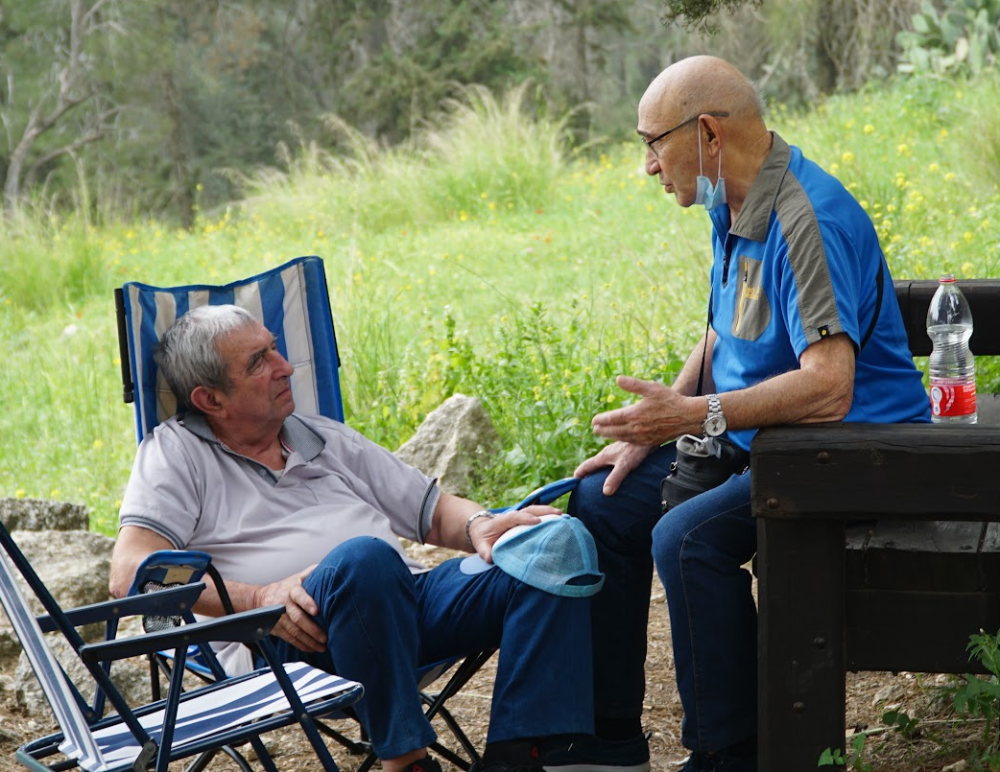

I was born in a small village in Russia in 1941, because my mother and I escaped the war.
My mother left Moscow when the Nazzi's attacked, but we returned after the war has ended.
I studied Chemistry, and indeed was a chemist working in the shoe industry. Chemistry was always my passion.
I married Bella in 1970, and we had our daughter Jenia in 1973.
I moved to Israel in 1999, where my first and only grandson was born.
Stayed in Ashdod through all my years here, having relatives in Rehovot as well.
My Photos

My Playlist
Give Me a Like
Scan the Code to My Website
Q&A
The differences between web1, web2 and web3:
Web1
1996
Read-Only
Mostly based on HTML/Portals
Millions of users
One way publishing of content
Web2
2006
Read and write Web
XML / RSS
Billions of users
Two way communication
Web3
2016
Read, Write and execute web
RDF / RDFS / OWL
Trillions of users
AI and the web learning what
you want and delivering you a
Personalized web experience.
Use case: Searching for a medicines side effects online.
Web1: You will have to know a medical portal address, to which
you can go, and start looking for hyperlinks to medical side effects
until you find the medicine you are using.
Web2: You can no go to some sort of a portal, and search for the medicine
you are using. That will focus the content of the website on what is relevant to you.
Web3: The portal now might be custom made for you, it will suggest you search
for the medicine before you searched yourself because it knows you bought it online.
When you search, your search will be semantically adjusted, and personally fit for you.